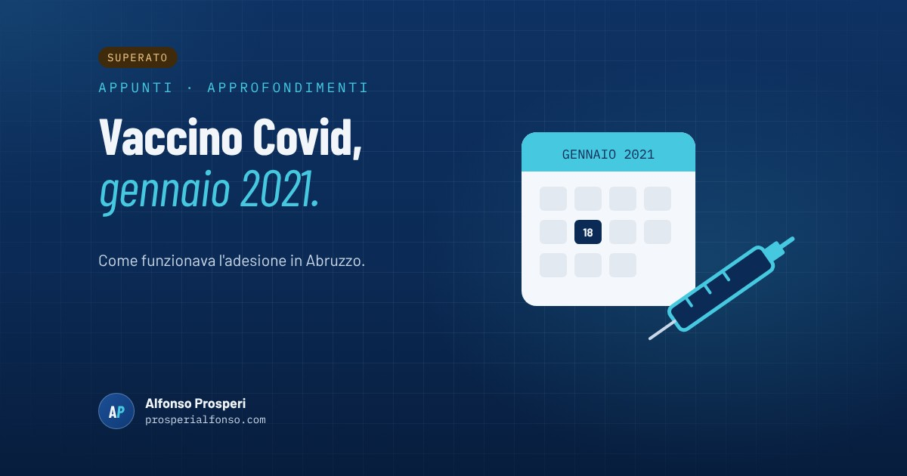

Da lunedì 18 gennaio 2021 era attivo in Abruzzo il servizio per manifestare l'interesse alla vaccinazione anti Covid-19 per il personale non sanitario della seconda fase. Ecco come funzionava la prenotazione.
La piattaforma telematica della Regione Abruzzo era aperta a queste categorie:
- persone sopra gli 80 anni;
- persone con disabilità, insieme al loro caregiver;
- persone fragili, con esenzione per malattia cronica o rara.
Nelle prime ore gli accessi furono migliaia e il sito andò in difficoltà, ma la Regione assicurò che la piattaforma sarebbe tornata regolare in breve tempo. Il Dipartimento sanità ricordava inoltre che l'ordine di iscrizione non aveva relazione con l'ordine di somministrazione dei vaccini. La piattaforma restava attiva fino al 31 gennaio 2021, salvo proroghe, 24 ore su 24.
Potevano aderire i residenti in Abruzzo e chi era domiciliato nella regione per lavoro, assistenza o cura, seguito dalla rete regionale delle cure primarie. L'adesione era libera, volontaria e non vincolante. Servivano:
- il proprio codice fiscale;
- il numero della tessera sanitaria e, per le persone fragili, il codice di esenzione.
Come si accedeva
- Dal portale sanitario della Regione Abruzzo si entrava nei Servizi online e poi in Accedi ai servizi.
- Si sceglieva la voce dedicata ai vaccini Covid-19 e si entrava nel servizio.
- Si inserivano codice fiscale e numero della tessera sanitaria del richiedente, come nell'immagine qui sotto.
- Infine si inserivano i dati anagrafici e si indicava la categoria di appartenenza.
Per chi non poteva usare la piattaforma era disponibile un numero telefonico regionale dedicato, nei giorni feriali. Chi aderiva veniva poi contattato dalla ASL con tutte le informazioni sul vaccino, necessarie per firmare il consenso informato prima della somministrazione.